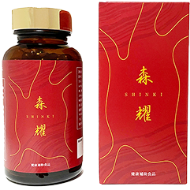
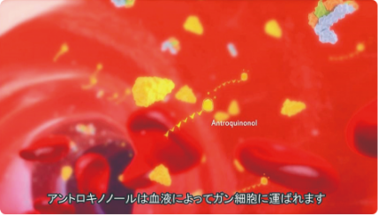
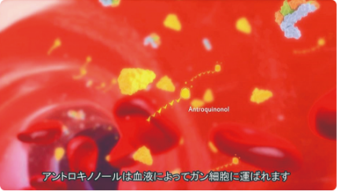
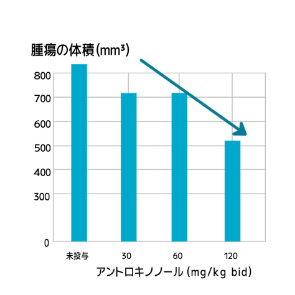
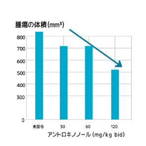

模倣品、類似品にご注意下さい。
アントロキノノールは世界で唯一ゴールデンバイオテック社のみが製造しております。
ゴールデンバイオテック社が注意喚起をしておりますのでご覧ください
ゴールデンバイオテックのホームページはこちら


アントロキノノール
含有エキス
「森耀」
医療費控除対象
■内容量
180粒（30日分）
カプセル（カプセル内は粉末）
18粒程度
（36ミリグラムのアントロキノノール）
森耀は最低でも６か月以上飲み続ける方が多いため､数量に応じてお求めやすい価格でご提供いたします。
1箱は10日分です。1か月分をお求めの方は
3箱をお選びください。
| 個数 |
単価価格 |
割引率 |
1箱
（10日分） |
32,000円 |
— |
3箱
（1ヶ月分） |
87,000円 |
10%OFF |
9箱
（3ヶ月分） |
244,000円 |
16%OFF |
18箱
（6ヶ月分） |
459,000円 |
21%OFF |
36箱
（1年分） |
900,000円 |
22%OFF |
本商品は医師の診断によって提供します。
医師の診断によっては提供できないことがございます。
毎月､自動的にお届けします。
毎回注文する必要がないため便利です。
定期便は会員ページから
いつでも停止が可能です。
| 個数 |
単価価格 |
割引率 |
| 毎月3箱 |
81,000円 |
16%OFF |
本商品は医師の診断によって提供します。
医師の診断によっては提供できないことがございます。
●定期便について
・定期便とはご注文数に応じた商品が毎月自動的に届く仕組みです。
・送料はずっと無料です。
・3箱は81,000円（税込）です。毎月届きます。
・銀行振り込みによる振込手数料はお客様ご負担です
・継続回数の約束はございません。初回注文だけのご解約も可能です。
・定期便の休止・解約をご希望される場合は、次回お届け予定の10日前までにお電話またはLINEにて申請を必ずお願
いいたします。


 



 
